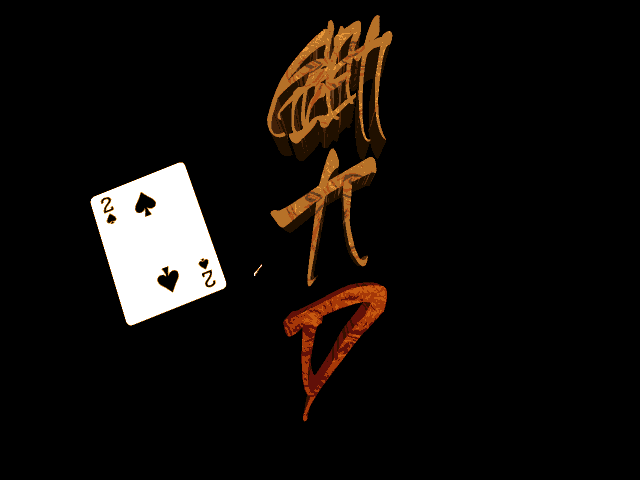
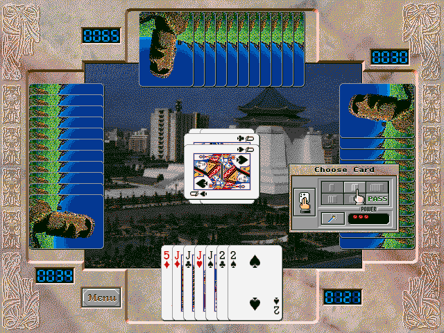

名稱：決戰大老二／決戰大老二2：無敵實戰篇 (Magic Big 2，中文版)
簡介：耀和1999年出品的大老二撲克牌遊戲，其核心檔案內容和宏申的DOS光碟版「鋤大D」
幾乎完全相同（包括遊戲開發過程的介紹影片），只是舊瓶換新再重新銷售而已。更
過份的是2000年再度重新包裝成「決戰大老二2」銷售，檔案內容一點都沒變，真讓人
傻眼。本遊戲最大的好處就是可以在Windows上安裝執行，但在現今64位元的環境下，
已無此優點了，還不如使用DosBox玩原本的DOS版遊戲。


保護：無，直接在光碟上執行。
限制：遊戲本質為DOS遊戲，只能在Win31/Win9x/XP系統上執行，也可在DOS上執行。
備註：XP系統執行時，要將BIG-2.exe設成Win9x相容。
備註：系統剩餘記憶體不可太多，否則遊戲可能會誤判而無法啟動，可進行下列修改：
BIG-2.exe
3D 20 75 38 00 7D 6E
-- -- -- -- -- EB --
或直接執行BIG2.COM。
備註：遊戲內定會以C:\MAGIC做為資料儲存位置。
攻略：請參考「鋤大D」。